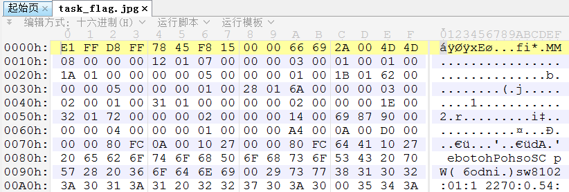

163 misc2-1
下载得到jpg格式文件，直接打开报错，十六进制编辑器查看：

从文件头可以很明显看出来，每四个字节被倒序了，例如 FF D8 FF E1 被倒序成了 E1 FF D8 FF。
写个脚本把字节顺序修复：
d = open('C:/Users/Administrator/Desktop/task_flag.jpg', 'rb').read()
with open('C:/Users/Administrator/Desktop/1.jpg', 'wb') as f:
f.write(b''.join([d[i: i+4][::-1] for i in range(0, len(d), 4)]))
运行得到修复后的图片，从而得到flag。
flag：flag{F098996689560BBB1B566EBC10D5E564}
164 EASY_EVM
下载附件得到info.txt：
pragma solidity ^0.5.0;
ABI:
[
{
"inputs": [],
"payable": true,
"stateMutability": "payable",
"type": "constructor"
},
{
"constant": true,
"inputs": [
{
"internalType": "string",
"name": "source",
"type": "string"
}
],
"name": "Convert",
"outputs": [
{
"internalType": "uint256",
"name": "result",
"type": "uint256"
}
],
"payable": false,
"stateMutability": "pure",
"type": "function"
},
{
"constant": true,
"inputs": [],
"name": "GetFlag",
"outputs": [
{
"internalType": "string",
"name": "flag",
"type": "string"
}
],
"payable": false,
"stateMutability": "view",
"type": "func tion"
},
{
"constant": true,
"inputs": [],
"name": "Require",
"outputs": [],
"payable": false,
"stateMutability": "view",
"type": "function"
}
]
Bytecode:
6080604052693100e35e552c1273c953600181905550691ac3243c9e81ba850045600281905550695ce6a91010e307946b8760038190555061030f806100466000396000f3fe608060405234801561001057600080fd5b24506004361060415760003560e01c80638906899514610046578063907e178b146100c9578063b357e2cd14610198575b600080fd5b61004e6101a2565b6040518080602001828103825283818151815260200191508051906020019080838360005b8381101561008e578082015181840152602081019050610073565b50505050905090810190601f1680156100bb5780820380516001836020036101000a031916815260200191505b509250505060405180910390f35b610182600480360360208110156100df57600080fd5b81019080803590602001906401000000008111156100fc57600080fd5b82018360208201111561010e57600080fd5b8035906020019184600183028401116401000000008311171561013057600080fd5b91908080601f016020809104026020016040519081016040528093929190818152602001838380828437600081840152601f19601f8201169050808301925050505050505091929192905050506101ac565b6040518082815260200191505060405180910390f35b6101a06101cd565b005b6060600054905090565b600080602083015190506101008160001c816101c457fe5b04915050919050565b600061027260008054600181600116156101000203166002900480601f0160208091040260200160405190810160405280929190818152602001828054600181600116156101000203166002900480156102685780601f1061023d57610100808354040283529160200191610268565b820191906000526020600020905b81548152906001019060200180831161024b57829003601f168201915b50505050506101ac565b905069291012e74c77fb9b1133600154828161028a57fe5b061461029557600080fd5b690c9158ba60d3e58402f560025482816102ab57fe5b06146102b657600080fd5b69208474a0eb40ca8d322560035482816102cc57fe5b06146102d757600080fd5b5056fea265627a7a7231582076bf9599d7c1db3c967349730ba966ea19a3c19a82c194cf481bf5dd993fec0d64736f6c63430005110032
这是一个以太坊智能合约（EVM）虚拟机的 Bytecode，那么考察的就是EVM逆向。不会做，告辞。
查了一下WP，Bytecode 被修改过使其无法反编译，需要修复或者直接看opcode。WP给出的源码长这样：
pragma solidity ^0.5.0;
contract EASY_EVM_CRYPTO{
// flag = "flag{An_E4sy_EVM_y0u_sO1ve_it!}"
string private FLAG;
uint private x;
uint private y;
uint private z;
// flag = 0x666c61677b416e5f453473795f45564d5f7930755f734f3176655f6974217d
constructor() public payable {
x = 231412341286754812414291;
y = 126381254785148123414597;
z = 438712649816519864511367;
}
function GetFlag() public view returns (string memory flag) {
assembly {
flag := sload(0)
}
}
function Convert(string memory source) public pure returns (uint result) {
bytes32 tmp;
assembly {
tmp := mload(add(source, 32))
}
result = uint(tmp) / 0x100;
}
function Require() public view {
uint tmp = Convert(FLAG);
require(tmp%x == 193913535844325315514675);
require(tmp%y == 59349569214207838388981);
require(tmp%z == 153559101645126489682469);
}
}
那么这实际上是一个求解同余方程组的数论问题。
试着把数论部分做一下，sage脚本：
from Crypto.Util.number import *
x = 231412341286754812414291
y = 126381254785148123414597
z = 438712649816519864511367
rx = 193913535844325315514675
ry = 59349569214207838388981
rz = 153559101645126489682469
m = crt([rx, ry, rz], [x, y, z])
while b'flag' not in long_to_bytes(m):
m += x * y * z
print(long_to_bytes(m))
flag：flag{An_E4sy_EVM_y0u_sO1ve_it!}
165 Let_god_knows
下载得到bmp格式文件，Stegsolve打开，切换到Red Plane 0：

使用显微镜仔细查看屏幕，平均来说看个一年左右之后可以发现画红圈的部分有个反色QR码。
把这一个Plane保存出来，然后截取这个QR码再反色放大：

扫码得到flag。
flag：flag{Ok@y!G0d_know5_n0w}
166 你猜他是什么文件
下载得到png格式文件，直接打开报错，十六进制编辑器查看：

文件头部有8字节被删了，但从后面的字节里暂时也没看到特征性的部分。
尝试搜索紧接着文件头的部分字节，搜索到 21 04 00 00 01 0F 时得到了结果：

比对一下RAR5.0格式文档，搜索的这6个字节刚好是Archive encryption header的一部分：

对于加密的RAR5.0压缩包来说正好是基本固定的，从而可以确定附件是一个RAR5.0加密压缩包。
把文件头修复为52 61 72 21 1A 07 01 00，成功得到加密压缩包：

然后用rar2john配合hashcat进行破解：
root@kali:~/Desktop# rar2john misc.rar
misc.rar:$rar5$16$d67a12958124fe477a5dc857a000b5ab$15$5b1ad6161baab878087419518449fe34$8$77c13cafe0189846
D:\CTFToolkit-v1.1.0\密码工具\hashcat>hashcat.exe -a 0 -m 13000 $rar5$16$d67a12958124fe477a5dc857a000b5ab$15$5b1ad6161baab878087419518449fe34$8$77c13cafe0189846 rockyou.txt
$rar5$16$d67a12958124fe477a5dc857a000b5ab$15$5b1ad6161baab878087419518449fe34$8$77c13cafe0189846:123456
得到密码123456，解压得到 test.zip 和 1.png。前者又是加密的，但其中包含一个大小与1.png完全相同的1.png，考虑明文攻击。先把1.png压缩成1.zip（这里使用WinRAR，压缩比最好），然后bkcrack：
D:\CTFToolkit-v1.1.0\暴力破解\bkcrack>bkcrack.exe -C test.zip -c 1.png -P 1.zip -p 1.png
bkcrack 1.3.1 - 2021-08-16
[20:11:50] Z reduction using 125 bytes of known plaintext
100.0 % (125 / 125)
[20:11:51] Attack on 65466 Z values at index 7
Keys: b3f4f7ba f72cf893 9552252e
22.8 % (14895 / 65466)
[20:12:46] Keys
b3f4f7ba f72cf893 9552252e
然后用得到的三个密钥解密原来的压缩包：
D:\CTFToolkit-v1.1.0\暴力破解\bkcrack>bkcrack.exe -C test.zip -c flag.txt -k b3f
4f7ba f72cf893 9552252e -d 1.txt
bkcrack 1.3.1 - 2021-08-16
[20:14:27] Writing deciphered data 1.txt (maybe compressed)
然而得到的1.txt实际上是deflate算法压缩后的数据，手工解压一下：
import zlib
data = open('D:/CTFToolkit-v1.1.0/暴力破解/bkcrack/1.txt', 'rb').read()
print(zlib.decompress(data, -zlib.MAX_WBITS))
运行得到flag。
flag：flag{3f76318f507fe7eb6422cd0703c64c88}
167 我们生活在南京-1
下载得到mp3格式文件，试着播放一下，能听到似乎是一个女声在读单词，但基本上无法识别。尝试对音频进行处理，audacity打开：

可以看到有大量发音段落的波形呈现从0开始暴涨，结束于一个较大波动的形状，这与正常的发音特征刚好是反过来的，考虑对音频进行倒转。全选音频-效果-反向（时间）：

再次播放就能听到清晰的英文单词了，根据题目提示“他们用无线电中惯用的方法区分字符串中读音相近的字母”，搜索无线电拼读字母表：
A - Alpha
B - Bravo
C - Charlie
D - Delta
E - Echo
F - Foxtrot
G - Golf
H - Hotel
I - India
J - Juliet
K - Kilo
L - Lima
M - Mike
N - November
O - Oscar
P - Papa
Q - Quebec
R - Romeo
S - Sierra
T - Tango
U - Uniform
V - Victor
W - Whiskey
X - X-ray
Y - Yankee
Z - Zulu
听写音频，得到：
Romeo Alpha Delta India Oscar Whiskey Alpha Victor Echo Sierra Alpha Charlie Romeo Oscar Sierra Sierra Tango India Mike Echo
转成字母：
radiowavesacrosstime
flag：flag{radiowavesacrosstime}
但是提交了显示不正确，哎嘿。
结果发现是后台flag录错了，录成了南京二的flag：flag{cwi54tr4diti0nm3th0d}
168 碎纸机11
下载得到50张 20x1000 大小的png格式图像：

那么很显然是要拼图了。
思路如下，先提取任意图像的右边缘列像素，与剩余图像的做边缘列像素比较，找到差值最小者，将后者拼接到前者的右边，然后重复这一步骤直到所有图像拼接完成。不断调整边缘像素差值的算法，直到得到一个比较号的结果为止。脚本：
from PIL import Image
import os
def get_column(img: Image, direction: str):
w, h = img.size
pixel = img.load()
if direction == 'l':
return [pixel[0, i] for i in range(h)]
elif direction == 'r':
return [pixel[w-1, i] for i in range(h)]
def compare(img1: Image, img2: Image):
pixel1 = get_column(img1, 'r')
pixel2 = get_column(img2, 'l')
diff = [abs(i[0] - j[0]) for i, j in zip(pixel1, pixel2)] # 主要调整这里的差值算法
return sum(diff)
def splice(left: Image, rights):
w, h = left.size
new = Image.new(left.mode, (w+20, h))
new.paste(left, (0, 0))
diffs = [compare(left, right) for right in rights]
min_diff = min(diffs)
index = diffs.index(min_diff)
new.paste(rights[index], (w, 0))
rights.pop(index)
return new, rights
path = 'C:/Users/Administrator/Desktop/images/'
files = os.listdir(path)
images = [Image.open(path + name).convert('RGB') for name in files]
start = 25 # 从任意拼图片开始，然后从结果中找到在最左边的那一条，或者干脆任意图片开始拼最后用PS处理也行
left, rights = images[start], images[: start] + images[start+1: ]
while len(rights) > 0:
left, rights = splice(left, rights)
left.save(path + 'res.png')
得到：
扫码得到flag。
flag：flag{You Can Repair A Picture From Splices Baesd On Entropy}